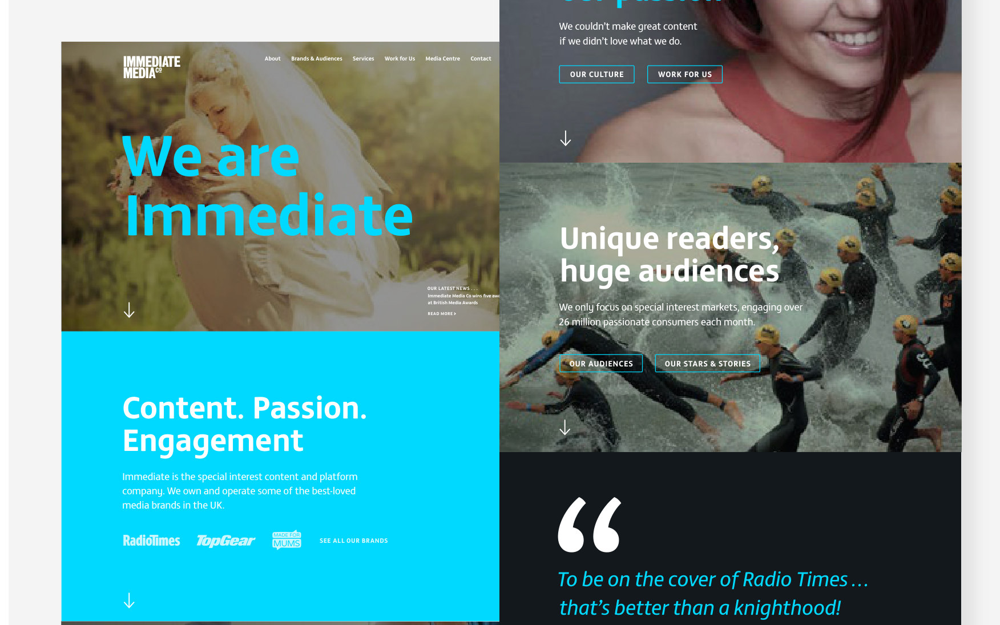

Work / Research · Product · Web
Just: Access
Refining the product & brand of a machine-learning legal transcription service.
Work / Research · Product · Web
Refining the product & brand of a machine-learning legal transcription service.

Available for freelance & contract work
Have a project in mind, or just want to say hello? I’d love to hear from you.